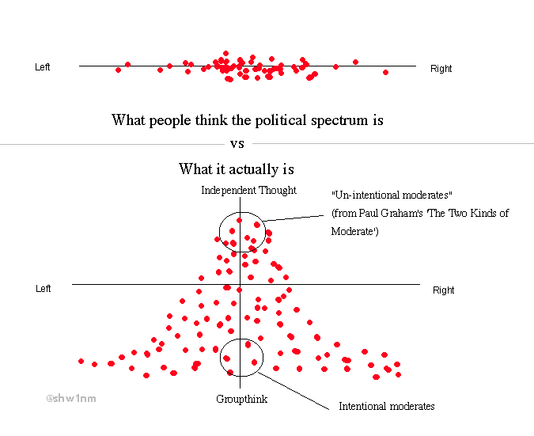
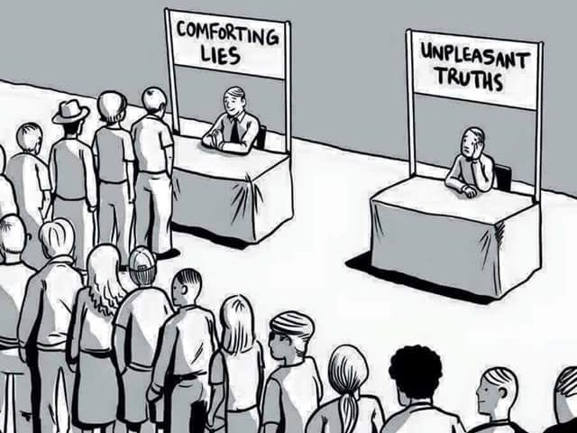
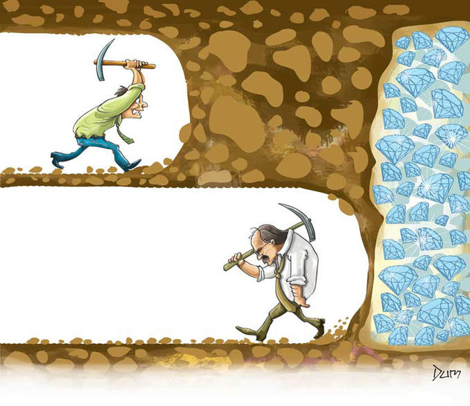
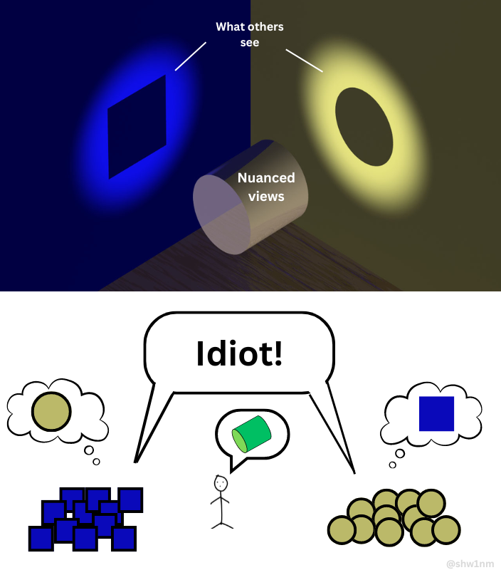
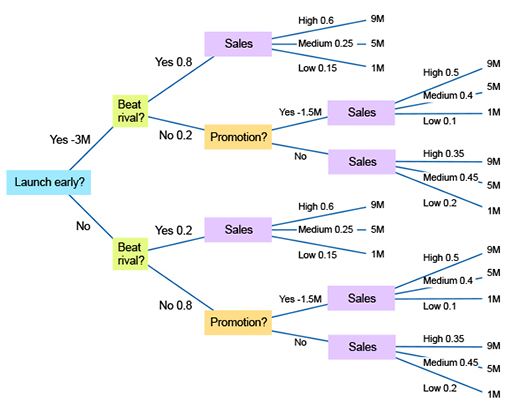
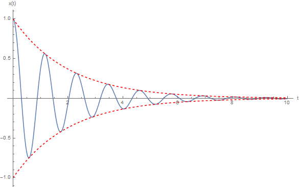

March 2025
For as much as I enjoy analyzing politics[1], I’m even more against discussing it with friends. This policy arose from three patterns observed over the years:
- Most people don’t have political views, they have political tribes
- Developing the political reasoning skills to graduate from tribes to views is incredibly difficult
and the kicker:
- Most people don’t want to graduate from tribes to views
Often when someone asks “who did you vote for”, what they’re actually doing is verifying your adherence to group culture, like a congregation member asking “you believe in god, right?” loudly in church.
The insidious nature of this question comes from the false representation as earnest, intellectual discourse. Many who ask it may truly believe they’re engaging earnestly, but their responses quickly reveal an angle more akin to religious police.
Most vulnerable to this behavior are the intellectually honest + socially clueless, who engage in good faith, unaware of the pending social ambush.
Why does this happen?
I think there are two main reasons, the first being the sheer intellectual difficulty of crafting an informed political view leads people to tribalism out of convenience.
Being informed is tough
To have an informed view on any given issue, one needs to:
- understand economics, game theory, philosophy, sales, business, military strategy, geopolitics, sociology, history, and more
- be able to understand and empathize with the various (and often opposing) groups involved in a topic
- detect and ignore their own bias
How can you prioritize limited resources with deadly consequences without understanding utilitarianism vs deontology (i.e. the trolly problem)?
Understand China-US relations without understanding communism vs capitalism, the fear of tyranny vs the threat of invasion, or how and where computer chips are made?
How military power dictates realities, economies affect happiness, or how frivolous lawsuits can protect consumers? How companies are built, how elections are won, or the role nuclear families and 30-year fixed mortgages play in America?
And even with all this knowledge, can you empathize with both sides of common issues — the poor renter vs underwater landlord? The tired worker vs struggling business owner? Rich vs poor, immigrant vs legacy, parent vs child — the list goes on.
Each side has both villains and victims. Both landlords and renters can be perpetrators and innocent. Both workers and business owners can be exploited and stolen from.
Yet most people can only identify with one narrative, usually one they’ve experienced or have a connection to. To acquire, then properly apply this knowledge while honestly detecting your own bias is such an undertaking it’s no wonder I only know one or two people capable of it[2].
So it’s no surprise humans resort to what’s worked for thousands of years: find our tribe and rep their beliefs, hard.[3]

note: this graph is not meant to imply only moderates are independent thinkers, but was a visual representation of Paul Graham’s “The Two Kinds of Moderate”. Each dot represents the average of a person’s entire collection of views (which could be spread out) — imo the hump could absolutely be shifted left or right, but the likelihood of someone independently agreeing with all of “the left” or “the right’s” views is unlikely given some percentage of each group’s stances are arbitrary
Why spend weeks or months reading when we can outsource this work to the tribe? It can be our friends, church, or even our favorite news station. Throughout history this method has been so successful we’ve literally evolved to do it. It’s why we laugh when others laugh, run when others start running, want things because others want them — tribalism is built-in.
But when you acquire opinions in bulk like this, suddenly you don’t have a reasoned view, you have an ideology. Your opinions on sex can predict your opinions on taxation [17]. And it removes the ability to discourse because suddenly learning is replaced with cheering, discovery replaced with winning/losing.
Despite this inherent weakness, overcoming tribalism to improve our reasoning is still doable, if we desire. But this brings us to the second, darker reality:
Most people don’t want to graduate from tribalism.
People don’t want to leave the tribe
By far, relationships determine the happiness of ones life, and relationships are not beholden to truth. In fact, they are very commonly built on the opposite.
Whether a boss’ reprimands are deserved or not, employees bond over a common enemy. Entire groups form on the basis of beliefs, false or otherwise. We have a word for this: “religion”.
Despite organized religion dropping in attendance, religious patterns of behavior are still everywhere, just adapted to a secular world.
Health, exercise, politics, work, self-improvement — these are all things I’ve seen friends employ their religious muscle into, across all spectrums and political aisles. And as we get older, I’m seeing more and more of my supposedly-secular friends engage in such behavior[4].
The same religious components are always there:
- proclamations of faith
- circular reasoning
- an evil force (Obama, Elon, Big Pharma, the food industry, corporations, immigrants)
And despite the variety of what these religious patterns can be applied to, they all have one thing in common: they are fantastic for finding community and identity.
So people are often faced with two options:
- A simple world with community, identity, and shared values
- A messy, complex world that takes more brainpower and alienates most of society
I’ll often ask: if the opposite of your beliefs were true, would you want to know?
Surprisingly, I’ve had good friends, who enjoy political debate, explicitly answer ‘no’. And even many who initially answer ‘yes’ will later admit to the answer really being ‘no’.
When given the opportunity to discover a truth that may completely shatter a belief that relationships and world views are built on, many will simply choose not to recognize it. It is much simpler and happier to think party B is evil and continue bonding with your friend group made up of party A. [5]
People don’t want research and probabilities, they want a sports team[6] and simple religious code.
At first this confused me, but on further inspection I think it makes complete sense. If you believe happiness is found from community (as I do), and your community, or even identity, is formed around a false belief, then not wanting to pop this bubble, no matter its validity, is understandable even if I can’t quite condone this myself[7].
The Matrix portrayed it best — when faced with the choice of calming delusion vs harsh reality, most people will choose the former.
Or better illustrated:

And this is fundamentally why I don’t discuss politics with friends.
It’s not that I don’t want or am scared of opposing views (in fact the opposite is true[8]), but rather because of how common others’ desire to “remain in the bubble” is.
If someone is self-aware enough to consciously acknowledge their choice to remain in the bubble, that’s totally fair. I respect it like I’d respect anyone who chooses to participate in a more traditional religion. My issue is when this view is falsely passed off as an intellectually-driven one.
Because if a desire to seek truth isn’t there, the conversation becomes the worst kind of debate, a pointless rhetorical one filled with fallacies and truthiness. Instead of trying to discover, it tries to convince — more akin to lawyers than scientists, and one that rarely has a satisfying resolution.
The social gamble
So how can we handle requests for such discussion?
One is to avoid the conversation entirely, since besides often being a social trap, discovering how many friends prefer a false image to reality can be depressing.
However, one reason to persevere is to find the 1% of people that also want to see the world as it is. Aka, finding your own community of anti-tribalists.
But engaging this topic harbors risk. The potential payoff is huge: a potential friend, with deeper connection and understanding if you can get to the “aha” moment. But failure to get there yields anger and alienation.

Knowing when to take this risk is tough — I’ve certainly tried with many friends until we either hit the “aha” point, or (more often) hit a sign of dogmatic belief that signals this person would rather stay in the bubble[9][11].
A key signal of dogma is when your conversation partner’s tone takes on that of a lawyer trying to persuade. Combative, using rhetorical tricks and fallacies, or different angles when one fails instead of understanding the failure.
A productive conversation is more like two archaeologists trying to discover, with honest participants even pointing out flaws in their own argument for the sake of accuracy. While being “wrong” is a loss in the lawyer-style debate, it’s a win in the archeological one — because you’ve discovered something you previously hadn’t known.
Fight the tribalism
When friends drag me into political conversation, it’s often with a tribal twist. Thus my angle, rather than falling into the partisan trap, becomes that of opposing their tribalism.
My hope here is for them to realize I don’t actually care about their conclusion, but rather their methods. Aka not what they believe, but why they believe it, like a teacher who gives partial points for showing your work.
Unfortunately this has the predictable effect Paul Graham wrote about in his Two Kinds of Moderate: most people just view me as the opposite of their own tribe:

That’s why I’m simultaneously viewed as a ‘woke’ liberal by conservative friends and a right-leaning conservative by my liberal friends.
As PG describes, this is particularly tough since you don’t get the protection of being part of an orthodox group.
So what’s the solution?
Well one is to send people here, so they can see this essay laid out clearly, free from the posturing and fallacies that comes with verbal discussion in front of an audience[10].
Another is to surround oneself with people who understand and value intellectual honesty already.
Moving to the Bay
After seven years in San Diego, my wife and I have decided to uproot our family and move to the Bay Area. While there were many factors (a new job opportunity, family), a significant reason was finding a community of truth-seeking people. It’s not that truth-seeking is a requirement for friendship, far from it. But going without also seems silly. It’s something I’d like to have in at least a tiny dose regularly.
It’s not that the average person is any less tribal up there, but because Silicon Valley contains such a high concentration of people testing ideas in the world, it selects for people that must regularly re-evaluate their biases or fail.
Thus, I’ve encountered more individuals attempting to see the world unfiltered there than any other location, despite literally running away from the Bay for most of my twenties[12].
Improving your reasoning
So if one wants to improve their reasoning, how can they?
This is a huge topic, one I’m still learning about so I’ll give my two cents and then link more in-depth resources below.
In my opinion, there are four main steps one can take to better understand the world:
- become truth-seeking
- develop a reasoning system
- think in bets
- oscillate your argument
By far, a desire to seek truth is the most important — and as is the point in this essay, the most lacking.
It may take some work to get there, like learning to detect and resist your own tribalistic urge, or surrounding yourself with other truth-seeking folk, but I truly believe anyone can do it.
The next is a solid reasoning system.
I made a cheat sheet for friends and family in 2020 that I think has held up well, but I’ve been told Eliezer Yudkowsky’s The Sequences is a more developed version and the canonical text in this realm. So far I’ve only read Harry Potter and The Methods of Rationality, but can say it is an excellent place to start.
The third piece, aka “thinking in bets” [13], is technically part of a reasoning system — but is so key to my differing world view against tribalism that I wanted to mention it directly.
Thinking in bets
As humans, we try to simplify the world. When “A caused B which caused C”, things are much easier to understand.
But the world is rarely this simple. There often isn’t a single cause for things. In other words, life isn’t a computer program, it’s more like poker:
“There’s a 40% chance this succeeds because of A, 25% chance of B, 10% something we haven’t thought of, and 25% we’ve got the model entirely wrong to begin with”
What’s even worse, correct approaches can still fail, incorrect approaches can still succeed — knowing which is which (even after the fact) is often impossible. And when we try to imagine a future scenario, now the timeline doubles at every decision point. We have to hold exponentially more information in our heads.
“If A is true, then B is true, but if A is NOT true, then C is true, and if B is true, then…”

We very quickly max out our cognitive ability to visualize our world model.
But it is exactly this difficulty you must not shy away from, as tempting as the simpler model is, because this nuance is where objective truth lies (imo). [14] [15]
Oscillate your argument
Now that we’re truth-seeking, with solid reasoning and probabilistic thinking, we can focus on defeating our own inherent bias.
There’s no foolproof way of doing this besides maybe finding someone smarter than you, but one method I’ve found is to oscillate your argument back and forth[16].
For example, if you believe goats are sentient, try to steelman (find the strongest argument for) the opposite view. Put all your energy into finding valid arguments that prove goats are not sentient.
What you’ll find, is that you may succeed in flipping your view. And once this happens, flip and steelman the opposing argument yet again. Rinse and repeat, over and over like a spring exhausting it’s potential energy until you finally end up with a rigorously tested viewpoint.

This not only increases likelihood of discovering truths, but has the added bonus of being able to empathize with opponents of your view, such that you can understand and explain where their (or your) argument falls short, having gone through the journey yourself.
Anyway, hope that makes sense.
If you’re a friend reading this, I hope the takeaway is that it’s likely not what you believe I have issue with, but why you believe it. There are valid, nuanced reasons to hold most positions, but rarely do I hear them in lieu of poorly-reasoned, tribal counterparts.
If you’re not a friend but this resonates, feel free to reach out, because at this point I’m desperate for like-minded folk.
tl;dr we’re monkeys on a space rock. the world is messy and grey. if you agree plz ping lol, here’s my Twitter and LinkedIn
If you want these sent directly to your inbox:
Footnotes
[1] I only consider myself moderately into politics, and slightly more into reasoning, if more from a practical sense than a formal one
[2] While it’s usually people with significant life experience through business or intense study, I’ve been pleasantly surprised by friends who’ve seemed to develop this ability without either of those things
[3] A reader might fairly ask what my tribe is. I’m not sure. A friend and I theorized one reason I might be more tribalism-allergic than others is due to a lack of tribe. Being quite culturally American while ethnically Indian, there isn’t really a place in the world I can go where I fit in. In India I’m seen as American, in America I’m seen as Indian — and it’s perhaps this lack of tribe that’s contributed to this viewpoint.
[4] One theory I have for this is reduced practice in critical thinking. As we get older, unless your job requires it in particular or you regularly switch industries, many roles are just pattern-based rinse and repeat. The other explanation is the community/identity that I cover later
[5] Note, there are other reasons people stick with tribalism, such as playing status games — but this seems derivative of the community/identity angle
[6] Interestingly, I’ve noticed people who demonstrate this sort of political tribalism also tend to be big sports fans — which could make sense if you view it as a form of regularly practiced tribalism.
[7] Worth noting, however, that knowingly choosing a false belief essentially makes ignorance a value, something I understand but personally can’t accept
[8] Few things give me greater joy than a discovery-ridden conversation with smart friends, and this is only enhanced if I learn something I previously believed to be true is actually wrong. Seriously, come prove some core belief I have as wrong and you will quite literally make my week.
[9] Fully understanding I can be the one in the wrong — however, when this is the case, the person explaining is usually able to:
- understand my argument
- convey their disagreement in good faith without circular reasoning or rhetorical tricks
[10] In general, I find writing is a much more intellectually honest medium than verbal discussion. Unless both debaters are skilled and intentionally trying for honest debate; the lack of record, tonality, and audience quickly devolve a conversation into the he-said-she-said, gaslighting, fallacy-ridden spectacle we see in presidential debates. But writing offers a reprieve: an idea can be articulated fully, without interruption, can be referenced and re-read. Indeed, writing seems to be the bane of gaslighters and ideologues and the bastion of the intellectually curious.
[11] I do think some small percentage people genuinely want to be truth-seeking but just lack the ability to detect their own bias. It’s these I hope this essay inspires to put the effort into learning, but spotting these among the tribalists I find hard.
[12] At 23 I quit my job, fed up with the bay, and bought a one-way ticket to Australia. After meeting my wife there and moving back, I did it yet again by explicitly taking a job in San Diego.
[13] Not a reference to the book, which I haven’t read — this is just a phrase I use
[14] I encourage everyone to learn poker to a level where they’re assigning probabilities to see this system in direct action. Tribalists will often deal in absolutes: “he’s 100% gonna fail”, “she’s doing it because she’s evil”, “housing always goes up”. But you’ll notice they rarely put their money where their mouth is.
[15] Many people will make the post-modernist argument “there is no objective truth”. I strongly disagree. If you’re reading this post, that means you’re using technology built on objective truth. You’re only alive because your ancestors sought out objective truth to find food and survive. Yes, there are many instances where the only accounts of an incident are heavily biased, but that does not mean objective truth doesn’t exist. Some actions were taken, with some combination of intentions at the time — even if we can’t realistically discover them, acknowledging their existence, and pursuing them with probabilistic guesses, is much more honest than just throwing our hands up and saying “everyone is correct” or just picking the one we like best.
[16] This is based on my favorite method for fixing mistakes in sports, over-correcting. if I’m hitting too far left, I try and make the “opposite” mistake by hitting too far right. Then it’s just a matter of honing in, or “oscillating” until I’m dialed in. In my experience the same works for reasoning.
[17] Another favorite line from Paul Graham’s “Two Kinds of Moderate”